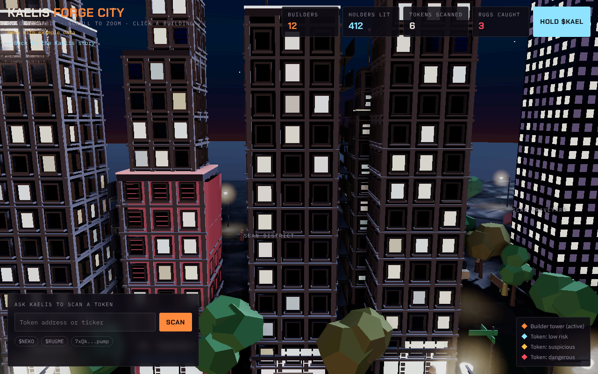
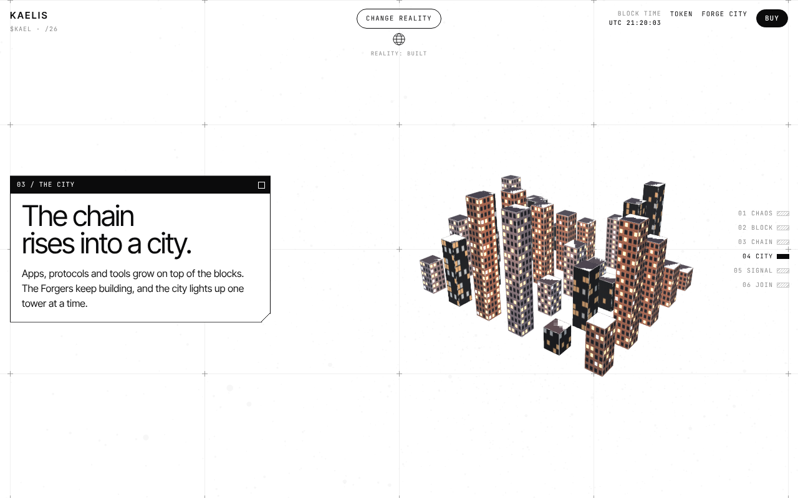
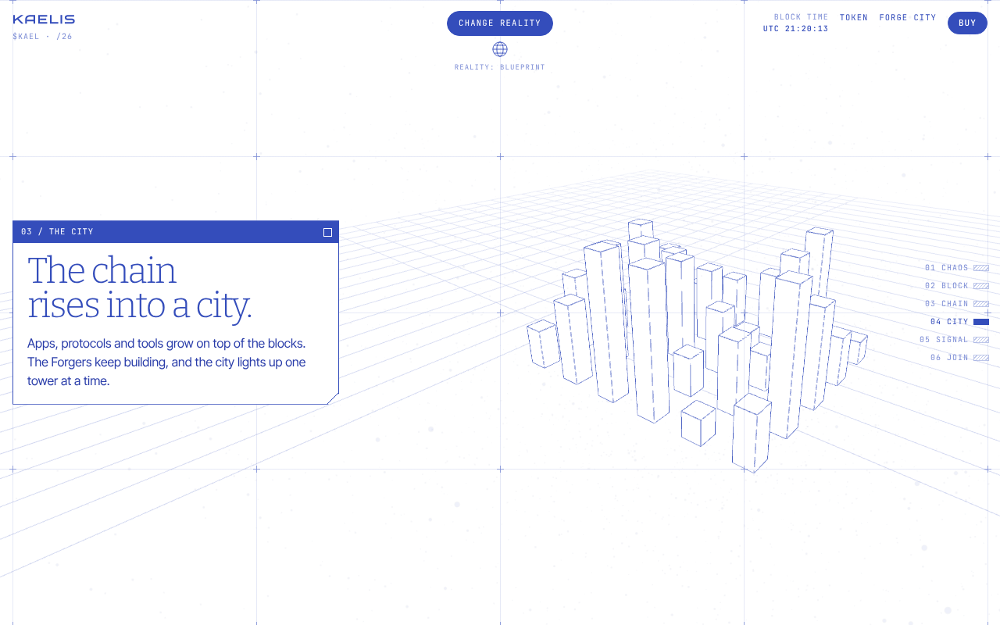
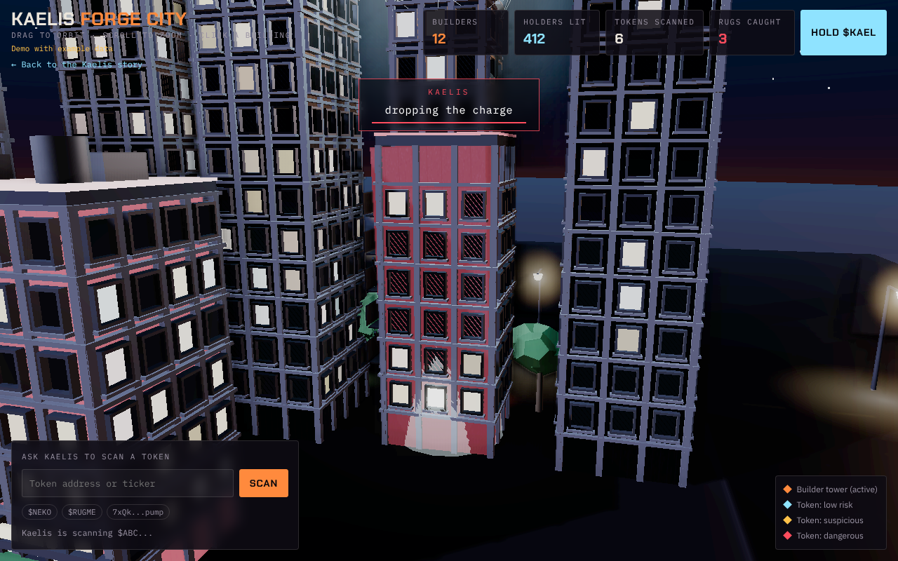
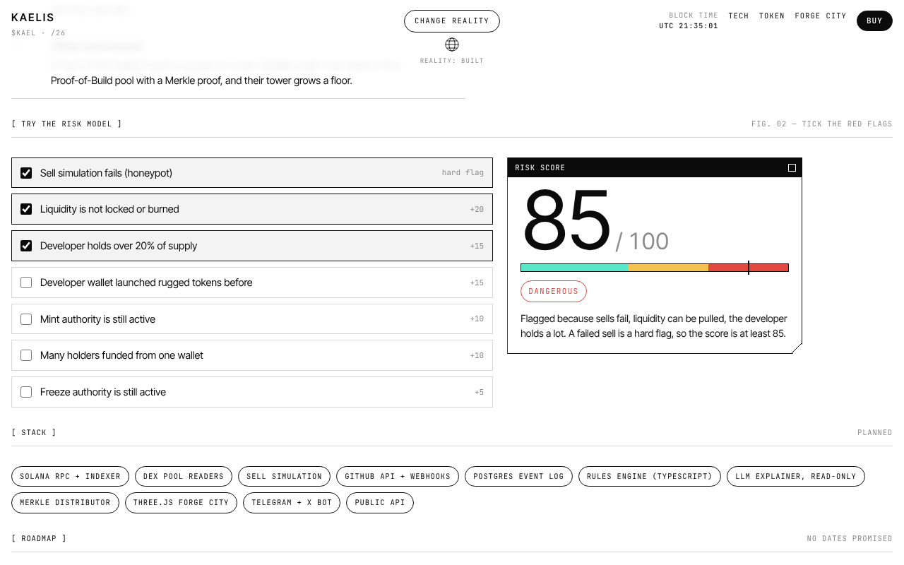

Everything the site uses, and how the pieces fit together. In plain words.
What visitors see, how it gets to them, and the agent Kaelis is planned to become.
Each page is one HTML file with its own CSS and JavaScript. Open it in a browser and it runs.
Three.js draws on a canvas with WebGL. Every scene has the same four parts:
The page redraws about 60 times a second. That loop moves the camera, the towers and the particles.
Each object asks "how far along are we?" and eases between two states. Scroll back up and everything plays in reverse.
The word KAELIS is drawn on a hidden canvas, sampled on a grid, and every filled cell becomes a tower.
All textures are CC0: free to use, no credit required.

Colours and fonts live in CSS variables. The button flips one attribute on the page, and the 3D scene eases to blue line art.


The city lives in its own file and loads in a frame only when you scroll close. The two pages talk with messages, so only the one on screen keeps rendering.

Kaelis reads the chain and GitHub, runs open rules, and gives a score from 0 to 100. A language model writes the summary but can never change the number.
Today the city runs on example data.

The full spec lives in docs/TECH.md. Demo with example data. Kaelis reports risk, never profit.